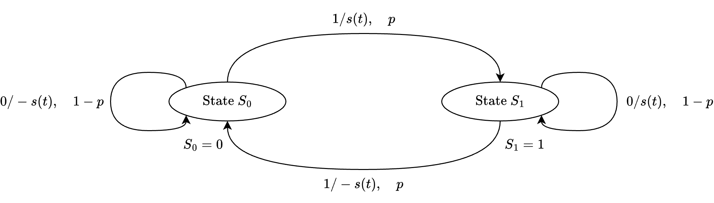

Signaling Schemes with Memory#
Signaling schemes with memory can be explained in terms of Markov chains and finite-state machines. The state transition and the outputs of the Markov chain are governed by:
where
\(I_{\ell}\) denotes the information sequence
\(m_{\ell}\) is the index of the transmitted signal \(s_{m_{\ell}}(t)\).
Baseband Signals and Data Sequences#
We focus on two key signals:
NRZ (Non-Return-to-Zero) Signal
NRZI (Non-Return-to-Zero Inverted) Signal
NRZ Signal#
The simplest form of baseband signaling.
A binary 1 is represented by a rectangular pulse with polarity \( +A \).
A binary 0 is represented by a rectangular pulse with polarity \( -A \).
The NRZ modulator is memoryless, which means the output depends only on the current bit and not on past bits.
This encoding is equivalent to:
Binary Pulse Amplitude Modulation (PAM)
Binary Phase Shift Keying (BPSK) in carrier-modulated systems.
NRZI Signal#
The NRZI signal differs from the NRZ signal in how transitions occur.
A transition (change in amplitude) happens only when the information bit is 1.
If the bit is 0, the signal amplitude remains unchanged.
This encoding is known as differential encoding.
Differential Encoding#
The relationship for NRZI encoding is given by:
where:
\( \{a_k\} \): Input binary information sequence.
\( \{b_k\} \): Output sequence of the differential encoder.
\( \oplus \): Addition modulo 2 (XOR operation).
XOR#
The XOR (exclusive OR) truth table follows these rules:
The output is true (1) if only one of the inputs is true.
The output is false (0) if both inputs are the same (either both 0 or both 1).
The Truth Table for XOR:
A |
B |
A \(\oplus\) B (XOR) |
|---|---|---|
0 |
0 |
0 |
0 |
1 |
1 |
1 |
0 |
1 |
1 |
1 |
0 |
We can see that:
\( b_k = 1 \) if the input bit \( a_k \) differs from the previous encoded bit \( b_{k-1} \).
\( b_k = 0 \) if they are the same.
Signal Representation
If \( b_k = 1 \): A rectangular pulse with amplitude \( +A \) is transmitted.
If \( b_k = 0 \): A rectangular pulse with amplitude \( -A \) is transmitted.
Thus, NRZI signaling can be seen as applying a differential encoder followed by an NRZ signaling scheme.
In summary:
NRZ is memoryless, depending only on the current bit.
NRZI introduces memory through differential encoding, which makes signal transitions convey information rather than amplitude levels.
Miller Coding#
In the following simulation, the original binary data is represented using Miller coding, i.e.:
Bit 1: A transition occurs in the middle of the bit interval.
Bit 0: No transition if the previous bit was 0; otherwise, a transition at the beginning.
import numpy as np
import matplotlib.pyplot as plt
# Generate a sample binary data sequence
data = np.array([1, 0, 1, 1, 0, 0, 1, 0])
# Generate NRZI signal using transition-based method with output bits
def generate_nrzi(data, amplitude=1):
nrzi_signal = []
output_bits = []
current_level = -1 # Start with -1 amplitude for first bit (assumption)
b_prev = 0
for bit in data:
if bit == 1:
current_level = -current_level # Toggle the level when bit is 1
nrzi_signal.extend([current_level] * 100)
b_current = 1 if current_level == amplitude else 0
output_bits.append(b_current)
return np.array(nrzi_signal), output_bits
# Generate Miller-coded signal with output bits
def generate_miller_code(data, amplitude=1):
miller_signal = []
output_bits = []
current_level = amplitude
for bit in data:
if bit == 1:
# For bit 1: transition occurs in the middle of the bit interval
half_bit = [current_level] * 50 + [-current_level] * 50
current_level = -current_level
output_bits.append(1)
else:
# For bit 0: no transition if previous bit was 0, transition at the start if previous bit was 1
half_bit = [current_level] * 100
output_bits.append(0)
miller_signal.extend(half_bit)
return np.array(miller_signal), output_bits
# Generate NRZ signal with output bits
def generate_nrz(data, amplitude=1):
nrz_signal = np.repeat(data * 2 - 1, 100) # Convert 1->+1, 0->-1, each bit lasts 100 samples
output_bits = data.tolist() # NRZ output bits match input bits directly
return nrz_signal, output_bits
# NRZI signal generation using XOR as defined by b_k = a_k ⊕ b_{k-1}
def generate_nrzi_xor(data, amplitude=1):
nrzi_signal = []
b_prev = 0 # Initialize with 0 as the initial condition for b_{k-1}
output_bits = []
for bit in data:
b_current = bit ^ b_prev # XOR operation: b_k = a_k ⊕ b_{k-1}
current_level = amplitude if b_current == 1 else -amplitude
nrzi_signal.extend([current_level] * 100)
b_prev = b_current
output_bits.append(b_current)
return np.array(nrzi_signal), output_bits
# Generate signals with output bits
miller_signal, miller_output_bits = generate_miller_code(data)
nrz_signal, nrz_output_bits = generate_nrz(data)
nrzi_signal, nrzi_output_bits = generate_nrzi(data)
nrzi_signal_xor, nrzi_xor_output_bits = generate_nrzi_xor(data)
# Display the output bit sequences for all methods
print("Original Data:", data.tolist())
print("Miller Output Bits:", miller_output_bits)
print("NRZ Output Bits:", nrz_output_bits)
print("NRZI Output Bits (Transition-Based Method):", nrzi_output_bits)
print("NRZI Output Bits (XOR Method):", nrzi_xor_output_bits)
Original Data: [1, 0, 1, 1, 0, 0, 1, 0]
Miller Output Bits: [1, 0, 1, 1, 0, 0, 1, 0]
NRZ Output Bits: [1, 0, 1, 1, 0, 0, 1, 0]
NRZI Output Bits (Transition-Based Method): [1, 1, 0, 1, 1, 1, 0, 0]
NRZI Output Bits (XOR Method): [1, 1, 0, 1, 1, 1, 0, 0]
# Time axis for visualization
time = np.linspace(0, len(data), len(miller_signal))
# Plot binary data using Miller code
plt.figure(figsize=(14, 3))
plt.plot(time, miller_signal, color='purple')
plt.title('Binary Data Sequence (Miller Code) with Annotations')
plt.ylim(-1.5, 1.5)
plt.grid(True)
# Annotate each bit on the binary data plot
for i, bit in enumerate(data):
plt.text(i + 0.5, 1.2, str(bit), ha='center', va='bottom', fontsize=10, color='red')
# Plot NRZ signal with annotations
plt.figure(figsize=(14, 3))
plt.plot(time, nrz_signal, color='blue')
plt.title('NRZ Signal with Annotations')
plt.ylim(-1.5, 1.5)
plt.grid(True)
for i, bit in enumerate(nrz_output_bits):
plt.text(i + 0.5, 1.2, str(bit), ha='center', va='bottom', fontsize=10, color='red')
# Plot NRZI signal (transition-based method) with annotations
plt.figure(figsize=(14, 3))
plt.plot(time, nrzi_signal, color='green')
plt.title('NRZI Signal (Transition-Based Method) with Annotations')
plt.ylim(-1.5, 1.5)
plt.grid(True)
for i, bit in enumerate(nrzi_output_bits):
plt.text(i + 0.5, 1.2, str(bit), ha='center', va='bottom', fontsize=10, color='red')
# Plot NRZI signal (XOR-based method) with annotations
plt.figure(figsize=(14, 3))
plt.plot(time, nrzi_signal_xor, color='red')
plt.title('NRZI Signal (XOR-Based Method: b_k = a_k ⊕ b_{k-1}) with Annotations')
plt.ylim(-1.5, 1.5)
plt.grid(True)
for i, bit in enumerate(nrzi_xor_output_bits):
plt.text(i + 0.5, 1.2, str(bit), ha='center', va='bottom', fontsize=10, color='red')
plt.tight_layout()
plt.show()
Step |
Input \( a_k \) |
Previous NRZI bit \( b_{k-1} \) |
XOR Operation \( b_k = a_k \oplus b_{k-1} \) |
NRZI Output \( b_k \) |
|---|---|---|---|---|
1 |
1 |
0 (assumption) |
\(1 \oplus 0\) |
1 |
2 |
0 |
1 |
\(0 \oplus 1\) |
1 |
3 |
1 |
1 |
\(1 \oplus 1\) |
0 |
4 |
1 |
0 |
\(1 \oplus 0\) |
1 |
5 |
0 |
1 |
\(0 \oplus 1\) |
1 |
6 |
0 |
1 |
\(0 \oplus 1\) |
1 |
7 |
1 |
1 |
\(1 \oplus 1\) |
0 |
8 |
0 |
0 |
\(0 \oplus 0\) |
0 |
Memory in NRZI Signaling#
The presence of the differential encoder introduces memory into the NRZI signaling process. Unlike the memoryless NRZ, the state of the signal in NRZI depends on both the current bit and the previous state, forming a Markov chain.
Markov Chain Representation#
Since the information sequence is binary, the Markov chain has two states, typically representing the states corresponding to binary 0 and 1.
The transition probabilities between these states are governed by the binary source generating 0s and 1s.
When the source is equiprobable (equal likelihood of generating 0 or 1):
This matrix describes the probability of transitioning from one state to another.
Each row sums to 1, indicating valid probability distributions.
Steady-State Probability Distribution#
The steady-state probability distribution \( \mathbf{p} \) represents the long-term probabilities of being in each state.
For the equiprobable case, the steady-state distribution is:
When the binary source is equiprobable, the steady-state probabilities are symmetric. This means that, in the long run, the system is equally likely to be in either of the two states.
Generalized Transition Probability Matrix#
If the binary source is not equiprobable, i.e., the probability of generating 1s is
The transition probability matrix becomes:
The probability parameter \( p \) allows modeling of biased sources.
The steady-state probabilities are essential for calculating the power spectral density (PSD) of modulation schemes with memory, such as NRZI, and for constructing a trellis diagram that visualizes time-evolving state transitions.

State Transition Diagram#
This diagram shows the two states \( S_0 \) and \( S_1 \), corresponding to the possible output states of the differential encoder in NRZI signaling.
\( S_0 = 0 \): The current encoded bit \( b_k = 0 \).
\( S_1 = 1 \): The current encoded bit \( b_k = 1 \).
Transition Labels:
Each arrow between states is labeled with two components:
Input bit (0 or 1): The binary information bit \( a_k \) that controls the transition.
Output signal (s(t) or -s(t)): The modulated output waveform transmitted after the encoding operation.
Interpreting the Labels
0/-s(t): Input bit 0 results in the output signal -s(t).
1/s(t): Input bit 1 results in the output signal s(t).
The signal polarity \( s(t) \) or \( -s(t) \) indicates the differential nature of NRZI:
If the bit is 1, the output transitions to the opposite state.
If the bit is 0, the output remains in the same state.
NRZI Transition Given \( S_0 \)#
\( S_0 \) means the current state corresponds to output \( -s(t) \).
The transition depends on the input bit \( a_k \):
Input \( a_k \) |
Transition |
Output |
Probability |
|---|---|---|---|
0 |
No change (remains in \( S_0 \)) |
\( -s(t) \) |
\( 1 - p \) |
1 |
Flips to \( S_1 \) |
\( s(t) \) |
\( p \) |
Notation Interpretation: \( 1 / -s(t), \quad (1 - p) \)
The input bit is 0.
The output remains at \( -s(t) \) (no transition).
This happens with probability \( 1 - p \).
NRZI Transition Given \( S_1 \)#
\( S_1 \) means the current state corresponds to output \( s(t) \).
The transition depends on the input bit \( a_k \):
Input \( a_k \) |
Transition |
Output |
Probability |
|---|---|---|---|
0 |
No change (remains in \( S_1 \)) |
\( s(t) \) |
\( 1 - p \) |
1 |
Flips to \( S_0 \) |
\( -s(t) \) |
\( p \) |
Notation Interpretation \( 0 / s(t), \quad (1 - p) \)
The input bit is 0.
The output remains \( s(t) \) (no transition).
This happens with probability \( 1 - p \).
Trellis Diagram#
The trellis diagram extends the state transition logic over time, showing how the states evolve with each successive input bit.
The horizontal axis represents time, advancing one bit period at each step.
The vertical axis represents the state of the encoder (\( S_0 \) or \( S_1 \)).
The lines between nodes represent possible transitions and are labeled similarly to the state diagram.
Trellis Paths
The labels 0/-s(t) and 1/s(t) follow the pattern:
Moving horizontally (staying in the same state) corresponds to a 0 bit.
Moving diagonally (switching between \( S_0 \) and \( S_1 \)) corresponds to a 1 bit.
Moreover, each edge is now labeled with:
Input bit: The incoming binary data bit (\( a_k \)) that triggers the state transition.
Output signal: \( s(t) \) or \( -s(t) \), representing the modulated waveform produced.
Output bit (b): The encoded bit \( b_k \), generated using the formula \( b_k = a_k \oplus b_{k-1} \)
Edges:
0/-s(t)/b=0 → Input bit 0, output signal -s(t), output bit 0.
1/s(t)/b=1 → Input bit 1, output signal s(t), output bit 1.
import networkx as nx
def plot_corrected_nrzi_trellis_with_output(data, nrzi_signal):
# Create a directed graph for the trellis diagram with output bits
G = nx.DiGraph()
states = ['S0', 'S1']
time_steps = len(data) + 1
# Add nodes and positions
pos = {}
for t in range(time_steps):
for i, state in enumerate(states):
node = f"{state}_{t}"
G.add_node(node, label=state)
pos[node] = (t, -i)
# Add edges with bits and output labels
for t in range(time_steps - 1):
for i, state_from in enumerate(states):
node_from = f"{state_from}_{t}"
for j, state_to in enumerate(states):
node_to = f"{state_to}_{t+1}"
input_bit = 1 if state_from != state_to else 0
# Determine initial previous bit based on the starting node
prev_bit = 0 if state_from == "S0" else 1
# Determine output bit based on NRZI rule
b_current = input_bit ^ prev_bit
output_signal = "s(t)" if b_current == 1 else "-s(t)"
label = f"{input_bit}/{output_signal}/b={b_current}"
G.add_edge(node_from, node_to, label=label, label_pos=0.01)
# Draw the graph
plt.figure(figsize=(15, 5))
nx.draw(G, pos, with_labels=True, node_size=2000, node_color="lightblue", font_size=10, font_weight="bold", arrows=True)
# Draw edge labels with bits
edge_labels = {(u, v): d['label'] for u, v, d in G.edges(data=True)}
nx.draw_networkx_edge_labels(G, pos, edge_labels=edge_labels, font_size=8, font_color="red")
plt.title("Trellis Diagram for NRZI Signaling with Output Bits")
plt.show()
# Generate and plot the corrected NRZI trellis diagram with output bits
plot_corrected_nrzi_trellis_with_output(data, nrzi_signal)
def plot_trellis_with_highlighted_path_only(data):
# Create a directed graph for the trellis diagram
G = nx.DiGraph()
states = ['S0', 'S1']
time_steps = len(data) + 1
# Add nodes and positions
pos = {}
for t in range(time_steps):
for i, state in enumerate(states):
node = f"{state}_{t}"
G.add_node(node, label=state)
pos[node] = (t, -i)
# Determine the actual path based on the NRZI rule
b_prev = 0
path_nodes = ["S0_0"]
current_state = "S0"
for t, bit in enumerate(data):
b_current = bit ^ b_prev # Calculate NRZI output bit
b_prev = b_current
next_state = "S1" if b_current == 1 else "S0"
path_nodes.append(f"{next_state}_{t+1}")
# Draw the graph with nodes
plt.figure(figsize=(15, 5))
nx.draw(G, pos, with_labels=True, node_size=2000, node_color="lightblue", font_size=10, font_weight="bold", arrows=True)
# Highlight the actual path in green
path_edges = [(path_nodes[i], path_nodes[i + 1]) for i in range(len(path_nodes) - 1)]
nx.draw_networkx_edges(G, pos, edgelist=path_edges, width=3, edge_color="green")
plt.title("Trellis Diagram with Highlighted Actual Path")
plt.show()
# Plot the trellis diagram with the highlighted actual path only
plot_trellis_with_highlighted_path_only(data)
def get_nrzi_path_and_output_sequence(data):
# Initialize variables
path_nodes = ["S0_0"] # Start from initial state S0_0
current_state = "S0"
b_prev = 0
output_sequence = []
# Generate the path and output bits based on the input data
for t, input_bit in enumerate(data):
# Calculate output bit using NRZI rule
b_current = input_bit ^ b_prev
b_prev = b_current
# Determine the next state
next_state = "S1" if b_current == 1 else "S0"
next_node = f"{next_state}_{t+1}"
path_nodes.append(next_node)
# Add the output bit to the sequence
output_sequence.append(b_current)
return path_nodes, output_sequence
# Get the path and output sequence
path_nodes, output_sequence = get_nrzi_path_and_output_sequence(data)
# Print the results
print("Data:", data)
print("Path Nodes:", path_nodes)
print("Output Sequence:", output_sequence)
Data: [1 0 1 1 0 0 1 0]
Path Nodes: ['S0_0', 'S1_1', 'S1_2', 'S0_3', 'S1_4', 'S1_5', 'S1_6', 'S0_7', 'S0_8']
Output Sequence: [1, 1, 0, 1, 1, 1, 0, 0]
Sequence of Waveforms Representation#
Let \( d(t) \) be a time-domain representation of a symbol stream.
Let function \(g(t)\) be a certain basic modulation pulse.
We define a waveform:
where:
Each term \(I_n\) corresponds to a specific amplitude from a constellation (e.g., \(\pm1, \pm3, \ldots\)).
\(g(t)\) is the baseband pulse shape used to carry each symbol over time.
The signal \(d(t)\) is a discrete-time representation of a sequence of signals composed of multiple successive symbols.
Waveform Components#
Recall PAM Waveform#
In the lowpass equivalent form, the PAM signals can be written as:
where:
\(g(t)\) is a real‐valued waveform that lives near DC (i.e., it is a baseband signal).
\(A_m\) are the same amplitude levels.
Recall the presence of the function \( g(t) \) in:
The lowpass equivalent PAM signal:
\[ s_{m,lp}(t) = A_m g(t) \]The PAM sequence:
\[ d(t) = \sum_{n} I_n g(t - nT) \]
Role of \( g(t) \) in \( s_{m,lp}(t) \)#
It can be considered that:
\( s_{m,lp}(t) \) = one PAM symbol = amplitude \(A_m\) × pulse \(g(t)\).
This is a snapshot of a single symbol, not the entire transmitted signal.
Thus, the \(g(t)\) represents the pulse shape of an individual PAM symbol.
\( s_{m,lp}(t) \) corresponds to one PAM symbol with amplitude \(A_m\).
Here, \(g(t)\) describes the shape of a single transmitted pulse—often used for analyzing or simulating one isolated symbol in baseband form.
Intuitive Example: The Shape of a Single Note
We can think of \( g(t) \) as the sound shape of one musical note.
When we play a single piano key, the sound has a specific shape—it starts, sustains, and then fades away.
In PAM, \( g(t) \) defines the pulse shape of a single symbol, like the waveform of one musical note.
So, when we see:
\(g(t)\): the “sound envelope” of the note—like how the sound is shaped over time (e.g., rectangular pulse or smoother waveform).
\(A_m\): the “volume” or “intensity” of that note—just like different amplitude levels in PAM.
Example:
If \( A_m = +3 \) corresponds to a loud note, \( g(t) \) shapes how that loud note sounds over time.
If \( A_m = -1 \) corresponds to a softer note, it uses the same \(g(t)\) shape but with less amplitude.
So, \( s_{m,lp}(t) \) describes just one note in the melody.
Role of \( d(t) \): The Sequence of Notes (Melody)#
Now, when we string together multiple notes, we create a melody.
The full PAM signal is like playing a series of musical notes, one after another:
This equation describes how each note \(g(t)\) is:
Shifted in time to occur at different time intervals (like playing notes one after the other).
Scaled by \(I_n\) to represent different amplitude levels (like changing volume or pitch to represent different symbols).
So, \( d(t) \) is like a melody—a sequence of musical notes.
Each note has the same shape \( g(t) \) but may have different amplitudes \( I_n \) (like different volumes).
Each \( g(t - nT) \) is like playing the note \(g(t)\) after waiting \(n\) beats.
Loosely speaking, we can say that:
\( g(t) \) is like the “sound shape” of a single note.
\( s_{m,lp}(t) \) is like one single note with a certain amplitude.
\( d(t) \) is like a full melody, created by playing these \( g(t) \) “notes” in sequence.
Example Use Case:#
In a PAM system, if we use a rectangular pulse \( g(t) \), then:
This results in a signal where each symbol is held constant for a duration \( T \), leading to a simple non-return-to-zero (NRZ) waveform.
If we use a raised cosine pulse, \( g(t) \) provides better spectral properties, reducing inter-symbol interference (ISI).
Map Binary Data to 4-PAM Symbols (\( I_n \))
Using 4-PAM (Pulse Amplitude Modulation), we typically map 2-bit pairs to amplitude levels.
A common mapping (Gray coding) is:
import pandas as pd
# Step 1: Define the binary source sequence
binary_sequence = "00101101001100101100011110"
# Step 2: Convert binary sequence into 2-bit groups for 4-PAM
# Ensure even length by padding if necessary
if len(binary_sequence) % 2 != 0:
binary_sequence = "0" + binary_sequence # Pad with leading zero if needed
bit_pairs = [binary_sequence[i:i+2] for i in range(0, len(binary_sequence), 2)]
# Step 3: Map 2-bit pairs to 4-PAM levels
pam_mapping = {
"00": -3,
"01": -1,
"11": 1,
"10": 3
}
I_n = [pam_mapping[bp] for bp in bit_pairs] # Mapped sequence
# Step 4: Define signal parameters
T = 1 # Symbol duration
n_symbols = len(I_n)
t_total = n_symbols * T # Total signal duration
# Define a fine time grid for smooth plotting
t = np.linspace(0, t_total, 1000)
# Step 5: Define the rectangular pulse function g(t)
def g(t):
""" Rectangular pulse function: g(t) = 1 for 0 <= t < T, else 0. """
return np.where((0 <= t) & (t < T), 1, 0)
# Step 6: Construct the waveform d(t) using the given equation
d_t = np.zeros_like(t)
for i, I in enumerate(I_n):
d_t += I * g(t - i * T) # Shifted rectangular pulses scaled by I_n
# Step 7: Plot the waveform with binary annotations
plt.figure(figsize=(8, 4))
plt.plot(t, d_t, drawstyle="steps-post", linewidth=2, label="4-PAM Modulated Signal")
# Annotate binary bit pairs at each symbol time
for i, (bits, I) in enumerate(zip(bit_pairs, I_n)):
t_pos = i * T + T / 2 # Midpoint of the symbol duration
plt.text(t_pos, I + 0.3, f"{bits}", fontsize=12, ha='center', va='bottom', color='red')
# Labels and formatting
plt.xlabel("Time (t)")
plt.ylabel("Amplitude")
plt.title("4-PAM Modulated Signal with Rectangular Pulse")
plt.grid(True)
plt.ylim(-4, 4)
plt.xticks(np.arange(0, t_total + T, T))
plt.yticks(sorted(set(I_n)))
plt.legend()
plt.show()
# Display the binary sequence and the corresponding PAM levels
df = pd.DataFrame({"Binary Pairs": bit_pairs, "PAM Symbols (I_n)": I_n})
df
| Binary Pairs | PAM Symbols (I_n) | |
|---|---|---|
| 0 | 00 | -3 |
| 1 | 10 | 3 |
| 2 | 11 | 1 |
| 3 | 01 | -1 |
| 4 | 00 | -3 |
| 5 | 11 | 1 |
| 6 | 00 | -3 |
| 7 | 10 | 3 |
| 8 | 11 | 1 |
| 9 | 00 | -3 |
| 10 | 01 | -1 |
| 11 | 11 | 1 |
| 12 | 10 | 3 |